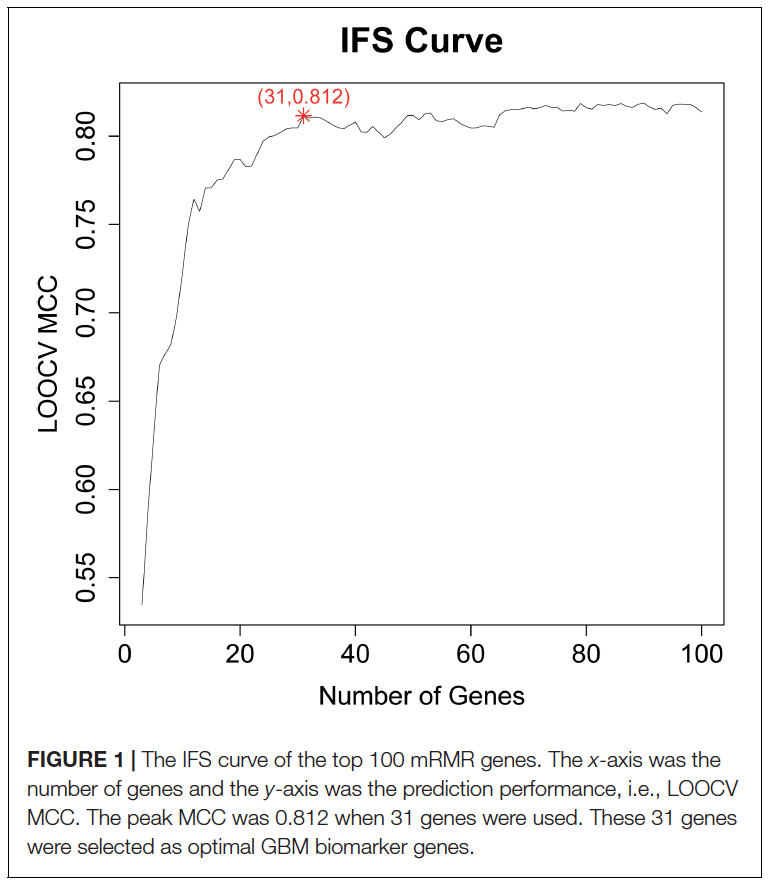

FigureYa217RMR
Xiaofan Lu; Ying Ge, Yijing Chen
2025-5-20
需求描述
requirement description
基于maximum relevance minimum redundancy (mRMR)算法，采用R语言（包）实现图1。
数据：GSE84465（很有名的一个数据集，网上有些公众号都采用该数据集）
Based on the maximum relevance minimum redundancy (mRMR) algorithm, Figure 1 is implemented using the R language (package).
Data: GSE84465 (a well-known dataset, adopted by several online public accounts)

出自https://www.frontiersin.org/articles/10.3389/fbioe.2020.00167/full
fromhttps://www.frontiersin.org/articles/10.3389/fbioe.2020.00167/full
应用场景
application scenario
采用minimal Redundancy Maximal Relevance鉴定差异基因，后采用SVM + LOOCV (支持向量机 + 余一交叉验证)法，根据MCC统计量确定最小且最优基因组合用于构建预测模型。
Differential genes are identified using the minimal Redundancy Maximal Relevance method, followed by the application of SVM + LOOCV (Support Vector Machine + Leave-One-Out Cross-Validation) to determine the smallest and most optimal gene combination based on the MCC for constructing the predictive model.
环境设置
environment setting
使用国内镜像安装包
use the domestic mirror installation package
xxxxxxxxxxoptions("repos"= c(CRAN="https://mirrors.tuna.tsinghua.edu.cn/CRAN/"))options(BioC_mirror="http://mirrors.tuna.tsinghua.edu.cn/bioconductor/")install.packages("mRMRe")加载包
load package
xlibrary(mRMRe)library(e1071)
Sys.setenv(LANGUAGE = "en") #显示英文报错信息 display English error messagesoptions(stringsAsFactors = FALSE) #禁止chr转成factor prohibit the conversion of chr to factor自定义函数，用来显示进度
Custom function for displaying progress
xxxxxxxxxxdisplay.progress = function (index, totalN, breakN=20) { if ( index %% ceiling(totalN/breakN) ==0 ) { cat(paste(round(index*100/totalN), "% ", sep="")) }} 输入文件
Input file
GSE84465_GBM_All_data.csv，单细胞count数据，下载自https://www.ncbi.nlm.nih.gov/geo/query/acc.cgi?acc=GSE84465
cell_info.txt，单细胞样本信息，下载自https://www.ncbi.nlm.nih.gov/geo/query/acc.cgi?acc=GSE84465 Series Matrix File(s)
GSE84465_GBM_All_data.csv, single-cell count data, downloaded from https://www.ncbi.nlm.nih.gov/geo/query/acc.cgi?acc=GSE84465
cell_info.txt, single-cell sample information, downloaded from https://www.ncbi.nlm.nih.gov/geo/query/acc.cgi?acc=GSE84465 Series Matrix File(s)
xxxxxxxxxx# 加载单细胞count数据# Load single-cell count datacount <- read.delim("GSE84465_GBM_All_data.csv",header = T,check.names = F,stringsAsFactors = F,row.names = 1, sep = " ")
# 加载单细胞样本信息# Load single-cell sample informationcinfo <- read.table("cell_info.txt",sep = "\t",row.names = NULL,header = T,check.names = F,stringsAsFactors = F)rownames(cinfo) <- paste0(cinfo$plate,".",cinfo$well)head(cinfo)
# 提取positive和negtive样本# Extract positive and negative samplespos.sam <- rownames(cinfo[which(cinfo$tissue == "Tumor"),])neg.sam <- rownames(cinfo[which(cinfo$tissue == "Periphery"),])
# 提取count数据里无效tag# Extract invalid tags from the count datarmtag <- c("no_feature", "ambiguous", "too_low_aQual", "not_aligned", "alignment_not_unique")indata <- as.data.frame(t(count))indata <- indata[c(pos.sam, neg.sam), setdiff(colnames(indata), rmtag)]indata$class <- rep(c(1,0), c(length(pos.sam), length(neg.sam)))colnames(indata) <- gsub("-", "_", colnames(indata)) # 避免后续构建模型时基因名出错 Avoid errors in gene names during subsequent model construction运行mRMR
Run mRMR
xxxxxxxxxxf_data <- mRMR.data(data = data.frame(as.matrix(indata)))results <- mRMR.classic("mRMRe.Filter", data = f_data, target_indices = ncol(indata), # 最后一列是target The last column is target feature_count = 40) # 原文取100个，这里取40个加快下面预测模型的循环 The original text selected 100, but here we choose 40 to speed up the loop of the predictive model belowfeats <- colnames(indata)[solutions(results)[[1]][,1]] # 得到的40个features The 40 features obtained构建SVM预测模型
Construct an SVM prediction model
很慢，请耐心，大概跑了4天。
It's very slow, please be patient, it's been running for about four days.
xxxxxxxxxxprobcutoff <- 0.5var <- c()mcc <- c()for (i in feats) { cat(i,"\n") var <- c(var,i) tmp <- indata[,c(var,"class")] f <- as.formula(paste0("class~",paste(var,collapse = "+"))) svmpred <- NULL for (j in 1:nrow(tmp)) { # 余一交叉验证 Leave-one-out cross-validation display.progress(index = j, totalN = nrow(tmp)) s <- rownames(tmp)[j] # 取出一个样本 Take out a sample test.dat <- tmp[s,] # 该样本为测试集 This sample is the test set train.dat <- tmp[setdiff(rownames(tmp),s),] # 其余样本为训练集 The remaining samples serve as the training set # 构建SVM模型 # Construct an SVM model svmfit <- svm(formula = f, data = train.dat, kernel ="radial") # 应用于测试样本做预测 # Applied to test samples for prediction svmpredict <- predict(svmfit, test.dat, probability = T) # 生成结果 # Generate results svmpred <- rbind.data.frame(svmpred, data.frame(id = s, prob = svmpredict, # 预测概率 Prediction probability trueclass = test.dat$class, # 金标准 Gold standard stringsAsFactors = F), stringsAsFactors = F) }
svmpred$predclass <- ifelse(svmpred$prob > probcutoff, 1, 0) # 若概率大于50%判定1，否则为0 If the probability exceeds 50%, it is judged as 1; otherwise, it is 0. tp <- sum(svmpred$predclass == 1 & svmpred$trueclass == 1) # 计算真阳性 Calculate true positives tn <- sum(svmpred$predclass == 0 & svmpred$trueclass == 0) # 计算真阴性 Calculate true negatives fp <- sum(svmpred$predclass == 1 & svmpred$trueclass == 0) # 计算假阳性 Calculate false positives fn <- sum(svmpred$predclass == 0 & svmpred$trueclass == 1) # 计算假阴性 Calculate false negatives mcc <- c(mcc, (tp * tn - fp * fn) / (sqrt(tp + fp) * sqrt(tp + fn) * sqrt(tn + fp) * sqrt(tn + fn) )) # 计算MCC Calculate MCC cat("\n")}save(mcc,file = "mcc.rda") #保存到文件 Save to filemessage(paste0("--the maximal MCC reaches as ", round(mcc[which.max(mcc)],3)," at gene number of ",which.max(mcc)))开始画图
Start drawing
x
# 加载上一步的结果# Load the results from the previous step(load("mcc.rda"))head(mcc)
par(bty="o", mgp = c(2,0.5,0), mar = c(3.1,3.1,2.1,2.1),tcl=-.25,las = 1)plot(1:length(mcc),mcc, xlab = "Number of Genes", ylab = "LOOCV MCC", type = "l", lwd = 2)# 添加最大MCC的位置# Add the position of the highest MCCpoints(which.max(mcc), mcc[which.max(mcc)], pch = 8,col = "red",cex = 1.5)# 添加该位置的MCC信息# Add the MCC information for this locationtext(which.max(mcc), mcc[which.max(mcc)] - 0.04, labels = paste0("(",which.max(mcc),", ",round(mcc[which.max(mcc)],3),")"),col = "red")
xxxxxxxxxxdev.copy2pdf(file = "mcc.pdf",width = 4,height = 4)
# save.image("mRMR.RData")Session Info
会话信息
xxxxxxxxxxsessionInfo()